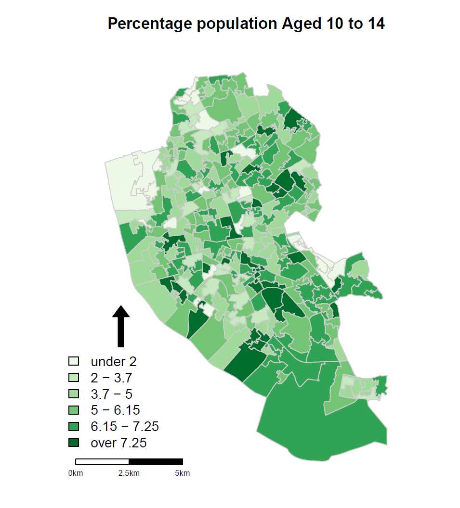
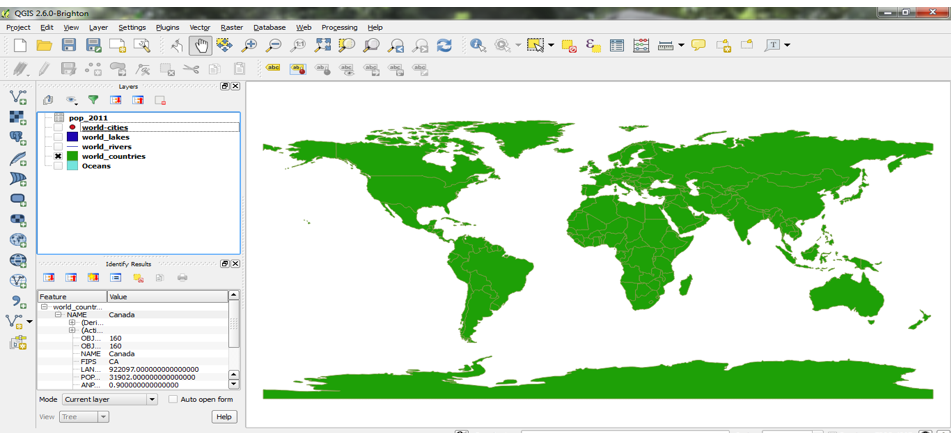
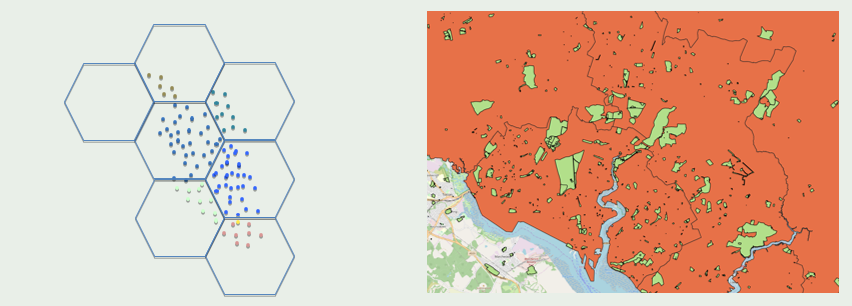

Training Courses
I offer a variety of training courses on GIS and spatial data, including introductory and advanced training using QGIS and R. My training is designed to both teach you about GIS itself and how to use the software to make maps and perform spatial analysis.

My courses are constantly being developed to take advantage of the latest changes in QGIS and R. Below is a list of the courses coming up, and a link to sign up (where available). If a course does not have a date, then please join my mailing list to hear when new dates are confirmed.
| Introductory | Advanced | |
|---|---|---|
| R | Intro to R as a GIS Apr 2026 | Advanced R and Spatial Statistics May 2026 |
| QGIS | Intro to QGIS Feb 2026 | Advanced QGIS Mar 2026 |
If you would like a course run for a group of you, or have any questions, then please do contact me or email nick@nickbearman.com to discuss your needs and get a quote.
Introduction to Spatial Data and Using R as a GIS
In this two half day course we will explore how to use R to import, manage and process spatial data. We will also cover the process of making choropleth maps, as well as some basic spatial analysis. Finally, we will cover the use of loops to make multiple maps quickly and easily, one of the major benefits of using a scripting language to make maps, rather than traditional graphic point-and-click interface. More details.
No previous experience of coding is required, although participants would benefit from some experience of using spatial data (e.g. Google Maps).
Tue 28th and Wed 29th Apr 2026, 10am – 1pm (UK/London), online, NCRM
You can also access this course in an On-Demand format via InStats. This gives you access to training materials, the recordings, and a discussion forum if you have questions, for 30 days.

Vickie, Analyst, Public Health Wales
Advanced R as a GIS: Spatial Analysis and Statistics
In this two part course we will show you how to prepare and conduct spatial analysis on a variety of spatial data in R, including a range of spatial overlays and data processing techniques. We will also cover how to use GeoDa to perform exploratory spatial data analysis, including making use of linked displays and measures of spatial autocorrelation and clustering. More details.
This course can follow-on from the Introduction to Spatial Data & Using R as a GIS course above, or be run independently if participants have some previous knowledge of R / RStudio and spatial data.

Tue 19th and Wed 20th May 2026, 10am – 1pm (UK/London), online, NCRM
You can also access this course in an On-Demand format via InStats: Advanced R for Spatial Analysis and Spatial Statistics in R. This gives you access to training materials, the recordings, and a discussion forum if you have questions, for 30 days.
Introduction to QGIS: Understanding and Presenting Spatial Data
In this two part introductory course we will give you an overview on how GIS works, and what we can and can’t do with spatial data. We assume no prior knowledge of GIS and will explain how to get data into the GIS as well as how to produce maps using your own data. More details.
This course requires no prior knowledge of GIS or spatial data. A level of basic computer experience is required; such as using websites, Word and saving & moving files.
Attendees on this course can choose to receive a Certificate of Completion, certified by QGIS for a donation of €20. Geospatial Training Solutions / Nick Bearman is a QGIS approved training organisation, and a donation of €20 for each participant will be made to the QGIS Foundation, supporting the development of QGIS.
Tue 24th and Wed 25th Feb 2026, 10am – 1pm (UK/London), online, NCRM
You can also access this course in an On-Demand format via InStats. This gives you access to training materials, the recordings, and a discussion forum if you have questions, for 30 days.

Harriet Ann Patrick, PhD Researcher, University of Sheffield
Advanced QGIS: Spatial Analysis
This advanced two part course will develop your skills of using spatial data, including collating data from a variety of sources including XY coordinate data and address or postcode based data. We will also cover using spatial overlays, point-in-polygon analysis and spatial joins. More details.
This course can follow-on from the Introduction to QGIS course above, or be run independently if the participants have some previous knowledge of QGIS and spatial data.
Attendees on this course can choose to receive a Certificate of Completion, certified by QGIS for a donation of €20. Geospatial Training Solutions / Nick Bearman is a QGIS approved training organisation, and a donation of €20 for each participant will be made to the QGIS Foundation, supporting the development of QGIS.
Tue 3rd and Wed 4th Mar 2026, 10am – 1pm (UK/London), online, NCRM
You can also access this course in an On-Demand format via InStats. This gives you access to training materials, the recordings, and a discussion forum if you have questions, for 30 days.

Dr Caitriona Dowd, Assistant Professor, School of Politics and International Relations, University College Dublin
Other Courses
I have also run a number of other courses, based around the four courses above and tweaked for a bespoke audience. I have delivered bespoke courses to a wide variety of clients including Public Health Wales, Red Bull, National Trails UK and UEA International Development.
I also deliver bespoke GIS training one-to-one and small groups on a consultancy basis.
If you are interested in a bespoke course, please contact me for a discussion and a quote.